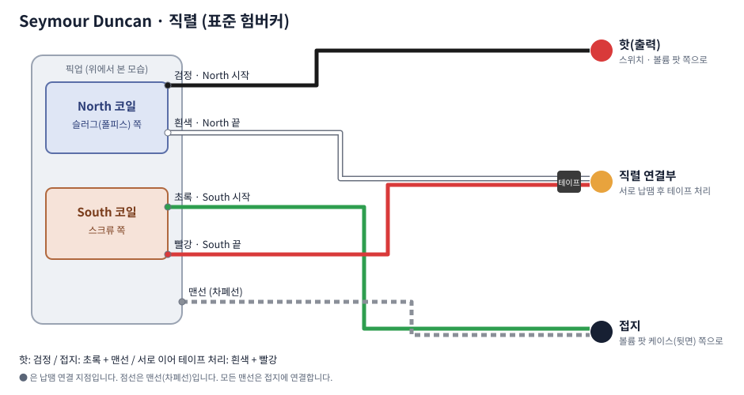
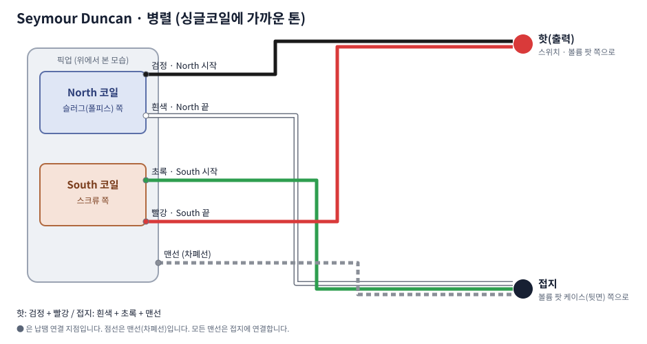
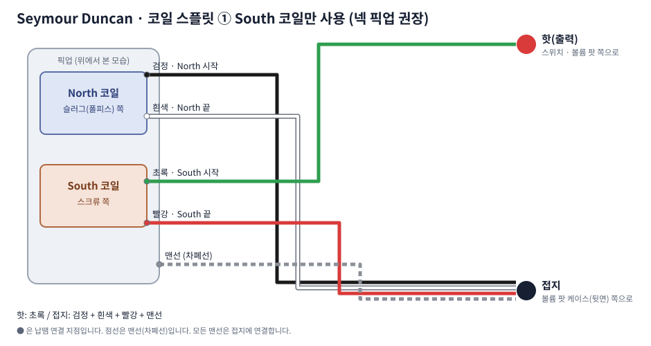
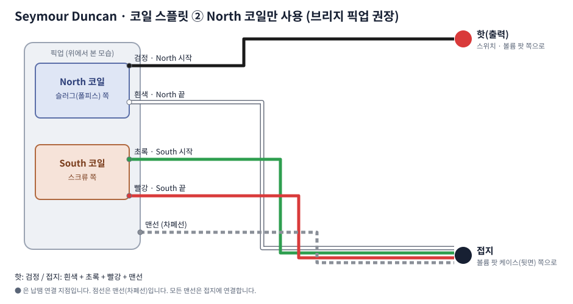

Seymour Duncan 험버커 배선도 (직렬·병렬·코일 스플릿)
Seymour Duncan 험버커의 핫(출력)은 검정, 접지는 초록+맨선이고, 직렬로 쓸 때는 흰색 + 빨강을 서로 납땜해 테이프로 감습니다. 연결 방식 4가지를 그림으로 정리했습니다.
선 색상표
| 역할 | Seymour Duncan 선 색 |
|---|---|
| North 시작 | 검정 |
| North 끝 | 흰색 |
| South 시작 | 초록 |
| South 끝 | 빨강 |
| 맨선(차폐) | 맨선 |
이 글의 배선도는 공개된 배선 정보를 바탕으로 새로 그린 도해입니다. 제품 모델·생산 시기에 따라 선 색이 다를 수 있으니, 반드시 가지고 있는 픽업의 제조사 설명서나 공식 배선도를 함께 확인해 주세요.
직렬 (표준 험버커)
대부분의 험버커 기타가 기본으로 쓰는 방식입니다. 출력이 크고 두툼하며 잡음을 상쇄합니다.

- 핫(출력): 검정
- 접지: 초록 + 맨선
- 직렬 연결부: 흰색 + 빨강 (서로 납땜 후 절연테이프)
병렬
출력은 줄고 소리가 맑아져 싱글코일에 가까운 톤이 납니다. 잡음 상쇄 기능은 유지됩니다.

- 핫(출력): 검정 + 빨강
- 접지: 흰색 + 초록 + 맨선
코일 스플릿 ① South 코일만 사용
한쪽 코일만 쓰는 방식이라 잡음 상쇄가 꺼지고 싱글코일처럼 잡음이 생깁니다. 넥 픽업에 권장되는 방식입니다.

- 핫(출력): 초록
- 접지: 검정 + 흰색 + 빨강 + 맨선
코일 스플릿 ② North 코일만 사용
반대쪽 코일만 쓰는 방식입니다. 슬러그 쪽 코일이 더 꽉 찬 소리를 내서 브리지 픽업에 권장됩니다.

- 핫(출력): 검정
- 접지: 흰색 + 초록 + 빨강 + 맨선
다른 제조사와 비교하기
색이 제조사마다 달라 헷갈린다면 험버커 선 색상 비교표에서 세 제조사를 한눈에 비교해 보세요.
이 글은 일반적인 정보 제공 목적이며 모든 제품과 연식에 맞는 것은 아닙니다. 납땜 작업은 인두 화상과 환기에 주의하고, 선 색이 확실하지 않으면 멀티미터로 확인하거나 전문 수리점에 맡기세요. 작업 중 발생한 손상에 대한 책임은 작업자에게 있습니다.